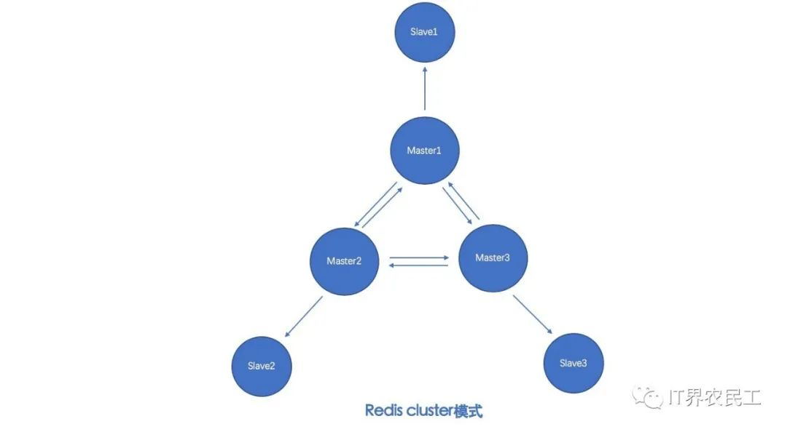
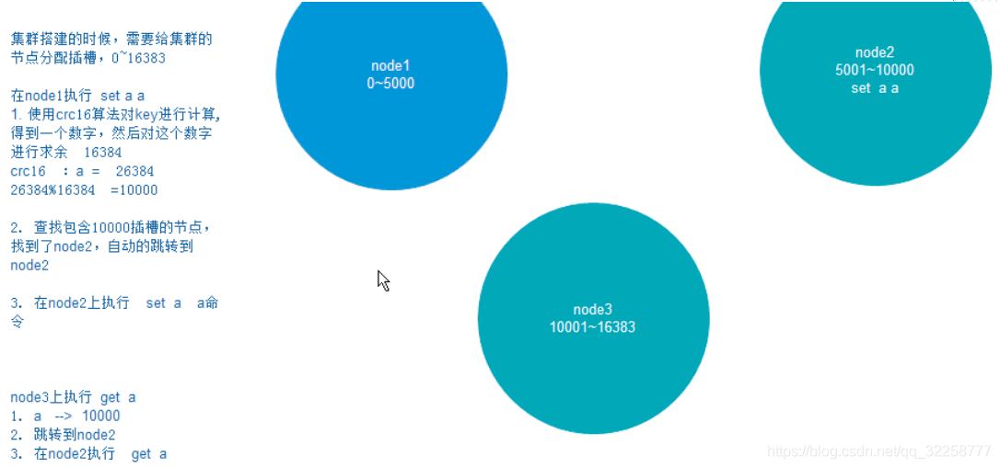
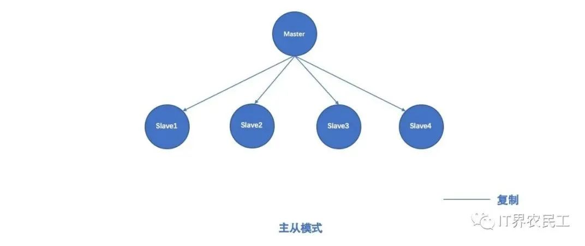
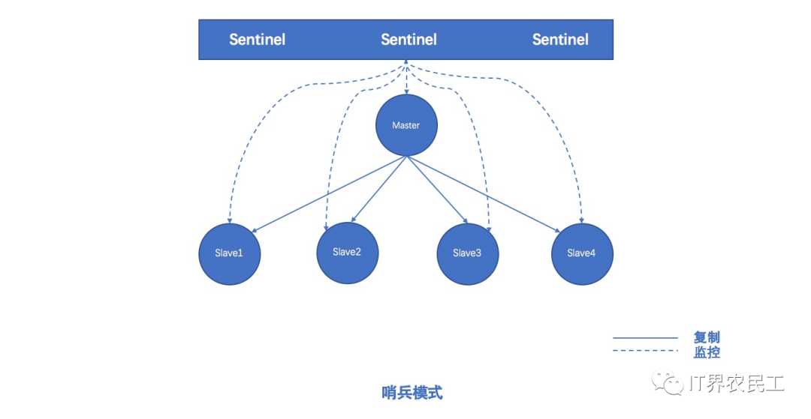
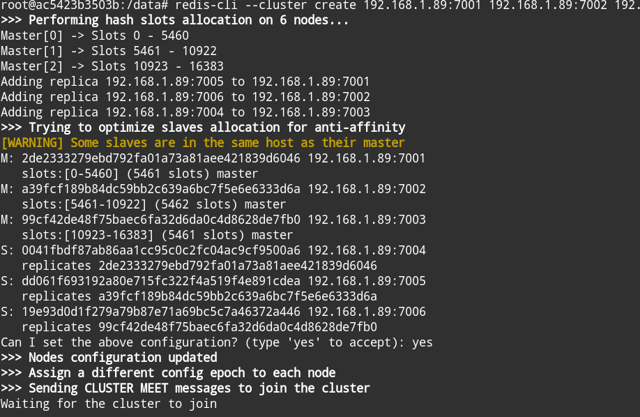
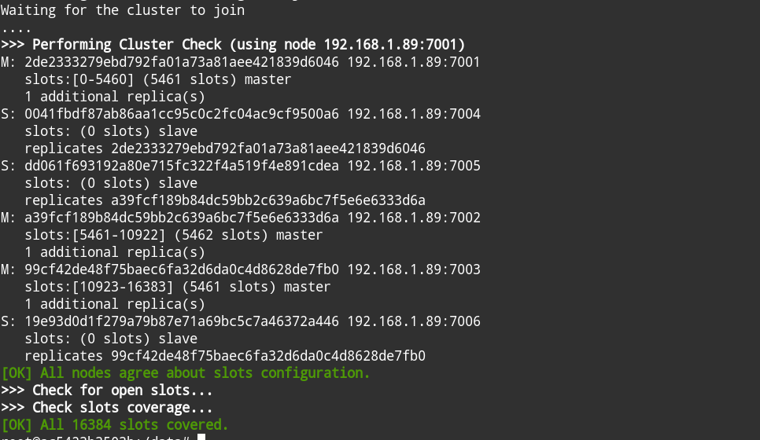

分布式缓存（Distribute Cache）
特点
1.一个服务端实现管理和控制
2.多个客户端节点存储数据
3.通过一致性哈希算法确定数据的存储与读取
4.以数据D， 节点N为基础，通过算法计算D对应的哈希值，找到对应节点
5.使用该算法可以使节点个数发生变化无需重新计算哈希值，确保存读都能快速找到对应节点
6.高性能存储、读取数据
7.动态扩展缓存节点
8.自动发现、切换故障节点
9.自动均衡数据分区
redis集群三种模式
Redis-Cluster
Redis 集群使用数据分片（sharding）而非一致性哈希（consistency hashing）来实现, 采用了无中心节点的方式来实现，每个主节点都会与其它主节点保持连接。节点间通过gossip协议交换彼此的信息，同时每个主节点又有一个或多个从节点
redis-cluster集群有16384个哈希槽（slot），其分布在该集群的所有节点中，哈希槽的作用是存储数据（即key和value）。当redis接受到key时，redis会根据crc16的算法得出一个结果，然后把结果对 16384 求余数，这样每个 key 都会对应一个编号在 0-16383 之间的哈希槽，通过这个值，去找到对应的插槽所对应的节点，然后直接自动跳转到这个对应的节点上进行存取操作。下图能直观的给出其操作的流程：
哈希槽分布到不同节点的做法使得用户可以很容易地向集群中添加或者删除节点
1. 比如用户将新节点 D 添加到集群中， 那么集群只需要将节点 A 、B 、 C 中的某些槽移动到节点 D
2. 比如用户要从集群中移除节点 A ， 那么集群只需要将节点 A 中的所有哈希槽移动到节点 B 和节点 C ， 然后再移除空白（不包含任何哈希槽）的节点 A
因为将一个哈希槽从一个节点移动到另一个节点不会造成节点阻塞， 所以无论是添加新节点还是移除已存在节点， 又或者改变某个节点包含的哈希槽数量， 都不会造成集群下线
故障转移
为了使得集群在一部分节点下线或者无法与集群的大多数（majority）节点进行通讯的情况下， 仍然可以正常运作， Redis 集群对节点使用了主从复制功能： 集群中的每个节点都有 1 个至 N 个复制品（replica）， 其中一个复制品为主节点（master）， 而其余的 N-1 个复制品为从节点（slave）
集群主节点出现故障，发生故障转移，其他主节点会把故障主节点的从节点自动提为主节点，原来的主节点恢复后，自动成为新主节点的从节点，如果主节点没有从节点，那么当它发生故障时，集群就将处于不可用状态
主从模式
1. 主从模式里使用一个redis实例作为主机(master)，其余多个实例作为备份机(slave)
2. master用来支持数据的写入和读取操作，而slave支持读取及master的数据同步
3. 在整个架构里，master和slave实例里的数据完全一致
主节点因为故障下线后，需要手动更改客户端配置重新连接
哨兵模式
哨兵模式中增加了独立进程(即哨兵)来监控集群中的一举一动。客户端在连接集群时，首先连接哨兵，通过哨兵查询主节点的地址，然后再去连接主节点进行数据交互。 如果master异常，则会进行master-slave切换，将最优的一个slave切换为主节点,同时，哨兵持续监控挂掉的主节点，待其恢复后，作为新的从节点加入集群中
创建redis集群
 